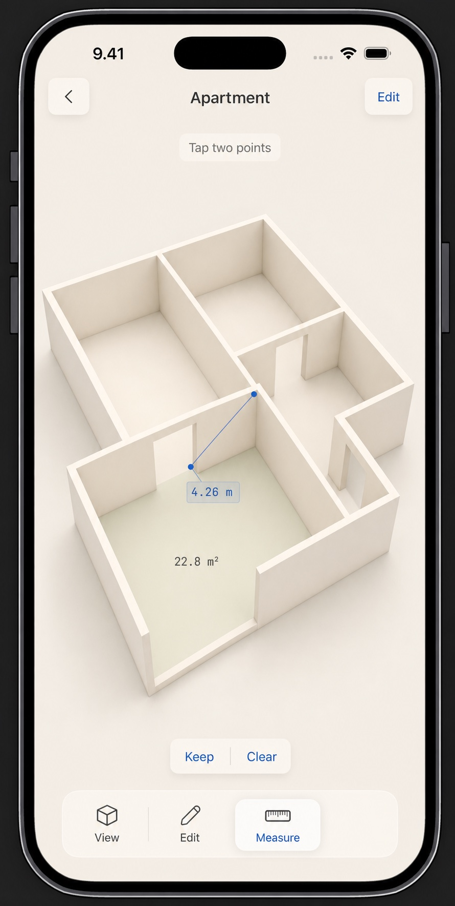

31 July 2026
06 / Overplan
The room,
without the room.
Turning LiDAR capture into a calm architectural object—and learning when the renderer is finally finished.
Room scanning is usually shown as technology: dots, meshes, confidence colours and a great many controls. Overplan began with the opposite question. What if the scan disappeared and left only the useful part behind?
Apple’s RoomPlan framework gives an iPhone with LiDAR a remarkable first understanding of walls, doors and windows. But capture is only the opening act. Real rooms contain awkward corners, missed openings and walls that need a human correction. So the model had to remain touchable: select a wall, move it, resize a window, add the doorway the scan did not quite see.
The visual target was a furniture-free clay model with soft global illumination: warm, legible and almost physical. The difficult part was restraint. Too much ambient occlusion made every corner dirty. Too little made the building float. Camera angle, contact shadow, bevel response and the colour difference between a wall face and its top edge all mattered. The renderer is now close enough to the original picture in our heads that we have formally stopped touching it without a very good reason.
At some point, polish becomes the product rather than preparation for it.
Next comes the quieter challenge: an interface that can orbit, edit, add and measure without resembling CAD. The current answer is contextual editing, plus protected temporary tools only when a tap must mean something different. The model remains the interface.
